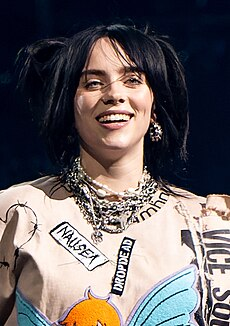

Billie Eilish
Billie Eilish Pirate Baird O'Connell (Los Angeles, 18 de dezembro de 2001) é uma cantora e compositora
estadunidense. Ganhou popularidade em 2016, quando lançou o single de estreia "Ocean Eyes" no
SoundCloud, posteriormente lançado pelas gravadoras Darkroom e Interscope Records.
A canção foi escrita e produzida por seu irmão Finneas O'Connell, com quem ela colabora em músicas e
shows ao vivo.

Eilish é mas conhecida por seu single "Bad Guy", de 2019, que atingiu o topo da Billboard Hot 100. Ela
foi indicada para seis Grammy Awards, incluindo Gravação do Ano, Álbum do Ano, Canção do Ano e Melhor
Revelação.
Ela é a artista mais jovem a ter sido indicada nas principais categorias do Grammy Awards.
Seu primeiro extended play, Don't Smile at Me (2017), alcançou o top 10 nos Estados Unidos, Reino Unido,
Canadá e Austrália. Eilish colaborou com o cantor estadunidense Khalid para o single "Lovely", lançado
em abril de 2018 e adicionado à trilha sonora da segunda temporada de 13 Reasons Why.
Seu álbum de estreia, When We All Fall Asleep, Where Do We Go? (2019), estreou no topo da Billboard 200
e alcançou o número um no Reino Unido, Canadá e Austrália.
O álbum obteve quatro singles no top 40 da Billboard Hot 100: "When the Party's Over", "Bury a Friend",
"Wish You Were Gay" e "Bad Guy", o último dos quais se tornou seu primeiro single número um nos Estados
Unidos.
Eilish tem oito singles de ouro e quatro de platina em solo estadunidense.
Seus prêmios incluem sete Grammy Awards, dois American Music Awards, dezesseis Guinness World Records,
três MTV Video Music Awards e um Oscar.
Ela é a pessoa mais jovem e a primeira mulher a vencer as quatro principais categorias do Grammy (Álbum
do Ano, Gravação do Ano, Canção do Ano e Melhor Artista Revelação) no mesmo ano.
Foi eleita uma das "100 mulheres mais inspiradoras e influentes do mundo em 2022" pela BBC.
Início da vida
Billie Eilish Pirate Baird O'Connell nasceu em Los Angeles, Califórnia, em 18 de dezembro de 2001, filha
de Maggie Baird e Patrick O'Connell, ambos conhecidos na indústria do entretenimento.
Ela é descendente de irlandeses e escoceses e foi criada no Highland Park de Los Angeles.
Eilish foi educada em casa e ingressou no Coro Infantil de Los Angeles aos oito anos.
Ela começou a cantar em tenra idade e começou a escrever músicas aos 11 anos, ao lado de seu irmão mais
velho, Finneas O'Connell, que já estava escrevendo, tocando e produzindo suas próprias canções com sua
banda.
Carreira
2015–17: Don't Smile at Me
Em outubro de 2015, Eilish gravou a canção "Ocean Eyes", inicialmente escrita por Finneas para sua banda,
e a enviou à sua professora de dança, que ajudou a coreografar uma dança para a canção.
"Ocean Eyes" foi lançado como segundo single de Eilish no SoundCloud em 2016.
Um videoclipe foi lançado em março de 2016 e um vídeo de Eilish performando uma dança para a canção foi
lançado em novembro de 2016.
Nesse ano, Eilish também lançou o single "Six Feet Under".
"Ocean Eyes" foi certificado platina pela RIAA e alcançou a posição 84 na Billboard Hot 100 em maio de
2019.
"Ocean Eyes" foi relançado mundialmente pela Darkroom e Interscope Records em 18 de novembro de 2016. Em
14 de janeiro de 2017, Eilish lançou um EP com quatro remixes de "Ocean Eyes".
Após o sucesso dos remixes de "Ocean Eyes", Eilish lançou o single "Bellyache" em 24 de fevereiro de
2017, com um vídeo lançado em março de 2017. Mais tarde, em março, Eilish lançou a faixa "Bored" como
parte da trilha sonora da série 13 Reasons Why, da Netflix. Em junho de 2017, Eilish lançou o single
"Watch" com um single de acompanhamento, "Copycat", lançado em julho de 2017, juntamente com o anúncio
de seu EP de estreia, Don't Smile at Me. Em todas as sextas-feiras de julho, Eilish adicionava outro
single ao EP. Esses singles incluem "Idontwannabeyouanymore" e "My Boy", com ambos sendo certificados
como ouro pela RIAA. Don't Smile at Me foi lançado em agosto de 2017. Após o lançamento do EP, Eilish
colaborou com o rapper americano Vince Staples para um remix de "Watch" intitulado "& Burn", que mais
tarde foi incluído em um relançamento do EP. Após o sucesso comercial do EP, a Apple Music nomeou Eilish
como uma artista Up Next em setembro de 2017.
2018–20: When We All Fall Asleep, Where Do We Go?
Em fevereiro de 2018, Eilish embarcou na Where's My Mind Tour, que foi concluída em abril de 2018. Para o
Record Store Day 2018, Eilish lançou um vinil de 7 polegadas com uma versão acústica de sua canção,
"Party Favor", e um cover acústico de "Hotline Bling" de Drake. Eilish colaborou com o cantor americano
Khalid no single "Lovely", lançado em abril de 2018 e adicionado à trilha sonora da segunda temporada de
13 Reasons Why. Ela também lançou os singles "Bitches Broken Hearts" e "You Should Me See in a Crown",
com o último sendo apresentado na trilha sonora do jogo eletrônico FIFA 19. Em julho de 2018, Eilish se
apresentou no Mo Pop Festival. Em outubro de 2018, Eilish lançou o single "When the Party's Over", e
assinou um contrato de modelo com a Next Models. Ela foi colocada na lista Forbes 30 Under 30 2018 em
novembro daquele ano, e lançou o single "Come Out and Play", escrito para um comercial da Apple com tema
de férias.
Em janeiro de 2019, Eilish lançou "Bury a Friend" como o terceiro single de seu álbum de estreia, When
We All Fall Asleep, Where Do We Go?, junto com "When I Was Older", um single inspirado no filme Roma, de
2018, que apareceu na coletânea Music Inspired by the Film Roma. "Bury a Friend" atingiu a posição 14 na
Billboard Hot 100. O quarto single do álbum, "Wish You Were Gay", foi lançado em março de 2019, e
estreou e atingiu a posição máxima se 31 nos Estados Unidos e foi certificado como platina pela RIAA.
When We All Fall Asleep, Where Do We Go? foi lançado em 29 de março de 2019. O álbum estreou no topo da
Billboard 200 (dos Estados Unidos), bem como na parada de álbuns UK Singles Charts (do Reino Unido),
fazendo de Eilish o primeiro artista nascido nos anos 2000 a ter um álbum número um nos Estados Unidos,
e a mulher mais jovem a ter um álbum número um no Reino Unido. Após a estreia do álbum, Eilish quebrou o
recorde de representar simultaneamente mais canções na Hot 100 por uma artista feminina, com 14, depois
de cada canção do álbum, com exceção de "Goodbye", registrada no Hot 100. O quinto single do álbum, "Bad
Guy", foi lançado em conjunto com o álbum e alcançou o número um na Billboard Hot 100 (dos Estados
Unidos), terminando o recorde de 19 semanas de Lil Nas X no número um com "Old Town Road". Ela é a
primeira artista nascida nos anos 2000 e o artista mais jovem desde Lorde (com "Royals") a ter o single
número um. Um remix da canção com Justin Bieber foi lançado em julho de 2019.
Ela iniciou a When We All Fall Asleep Tour no Coachella Festival, em abril de 2019. A turnê terminou na
Cidade do México em 17 de novembro de 2019. Em 27 de setembro de 2019, ela anunciou a Where Do We Go?
World Tour através de sua página no Instagram. A turnê está marcada para começar em Miami em 9 de março
de 2020 e terminar em Londres em 27 de julho de 2020.
Em 7 de novembro de 2019, a Third Man Records de Jack White anunciou que a gravadora lançaria um álbum
ao vivo acústico da performance de Eilish no Blue Room da gravadora. O álbum estará disponível
exclusivamente em vinil nas lojas de varejo Third Man em Nashville, Tennessee e Detroit, Michigan. Em 13
de novembro de 2019, ela lançou o single "Everything I Wanted".
Em 20 de novembro de 2019, Eilish foi indicada para seis Grammy Awards, incluindo Gravação do Ano e
Canção do Ano para "Bad Guy", bem como Álbum do Ano e Melhor Revelação. Aos 17 anos, ela é a artista
mais jovem a ser indicada nas quatro principais categorias do Grammy. No mesmo mês, Eilish foi coroada a
Mulher do Ano pela Billboard em 2019.
Em setembro de 2020, Eilish divulga uma prévia de Billie Eilish: The World's a Little Blurry, seu filme
documental produzido pela Apple TV+, que acompanhou a cantora por alguns anos de sua carreira para a
realização do longa. O filme marcou o fim de um estágio de sua carreira e o início de um próximo. No
mesmo ano a cantora lança o single Therefore I Am e um clipe em que aparece pegando comida vegana em um
shopping vazio.
2021-presente: Happier Than Ever
Ainda em setembro, durante a pandemia do novo coronavírus, Finneas disse em entrevista que não gostaria
de lançar o novo álbum durante a pandemia, gostaria que fosse um “álbum para a vacina”. Alguns meses
depois, em março de 2021, Eilish anunciou seu novo cabelo loiro com uma postagem no Instagram. A foto
conseguiu um milhão de curtidas em menos de sete minutos, batendo o então recorde que pertencia a Kylie
Jenner. Nos próximos meses, uma série de postagens da cantora com o cabelo loiro ficaram dentre as mais
curtidas da plataforma.
Até que em abril de 2021, durante o ápice da vacinação nos Estados Unidos, Eilish anunciou seu segundo
álbum de estúdio, Happier Than Ever, para julho do mesmo ano, junto com seu próximo single, Your Power,
que estreou ainda em abril. Logo em seguida a cantora anunciou seu single Lost Cause em Junho e logo em
seguida NDA no dia 9 de julho.
Dois dias após o lançamento do single, já em maio, a British Vogue divulgou uma entrevista com Billie
Eilish, em que ela aparece como capa da edição de junho de 2021. Nas fotos divulgadas ela aparece de
lingerie e roupas mais justas, que não eram tão optadas pela cantora, ao invés de roupas mais largas,
como forma de tentar não mostrar seu corpo em desenvolvimento à mídia. A entrevista e sua declaração
sobre sua nova forma de se vestir diante do público é um marco na carreira de Eilish, que disse “me
sinto mais como uma mulher”, em relação ao novo visual.
No mesmo dia da divulgação de sua entrevista à British Vogue, Eilish foi confirmada para presidir o Met
Gala de 2021, junto com o ator Timothée Chalamet, a poetisa Amanda Gorman e a tenista Naomi Osaka.
Eilish começou a ter ideias para canções de seu terceiro álbum de estúdio com Finneas em dezembro de
2021. Em uma entrevista de julho de 2022 com Zane Lowe para Apple Music, ela disse que esperava começar
a escrever o álbum em 2023. No ano de 2022, Billie ganhou o Oscar de Melhor Canção Original com a canção
"No Time to Die", se tornando a primeira pessoa nascida no século 21 a ganhar um Oscar.
Em 21 de julho de 2022, Eilish lançou seu novo EP, Guitar Songs, incluindo duas canções: a antes
anunciada "TV" e a inédita "The 30th".
No dia 6 de julho de 2023, Billie anunciou sua participação na trilha sonora do filme Barbie com a
canção What Was I Made For?. Sendo lançada no dia 13 de julho de 2023, a música fez com que a cantora e
Finneas fossem premiados com dois Grammy Awards, um Globo de Ouro e um Oscar. Com esse feito, Eilish
quebrou o recorde de pessoa mais jovem a receber dois Oscars.
Estilo Musical
Avery Stone, do Noisey, descreveu os vocais soprano de Eilish como "delicados", enquanto Maura Johnston,
da Rolling Stone, os caracterizou como "sussurrados".
Doreen St. Félix, do The New Yorker, opinou que ela tem uma "voz rouca e estridente que ela pode afinar
para reprimir".
Sua música incorpora elementos do pop alternativo, rock alternativo, dark pop,EDM,electro-pop,indie pop,
pop e trap.
Eilish e seu irmão Finneas O'Connell colaboram nas composições.
Eilish chamou Finneas de sua parceira na criação de canções e disse que ele também produz suas músicas,
além de se apresentar com ela em performances ao vivo.
Eilish e Finneas "gostam de inventar coisas e se tornarem personagens" e "têm músicas que são realmente
fictícias".
Eilish disse que várias canções também derivam das experiências dela e de Finneas.
Eles tentam escrever letras "realmente interessantes e conversacionais":
"Tentamos dizer coisas que não precisam ser tão profundas, [...] mas você diz algo muito mais
profundo de uma certa maneira que faz sentido, mas você realmente não pensou sobre."
Finneas afirmou que quando ele escreve canções para sua irmã, ele pretende "escrever [canções] com as quais
eu acho que ela se identifica e gosta de cantar e simpatizar com a letra e criar a sua própria".
Quando ele escreve com Eilish, ele tenta "ajudá-la a contar a história que ela está tentando contar, desviar
ideias dela, ouvir suas ideias" e usar uma linguagem que se encaixe na voz dela contando a história.
influências
Eilish cresceu ouvindo The Beatles, Green Day, Justin Bieber, Arctic Monkeys, Linkin Park e Lana Del
Rey.
Ela disse que o vídeo da canção "Runaway" da cantora norueguesa Aurora no YouTube a inspirou a seguir
uma carreira musical. O hip hop é o gênero favorito de Eilish e a sua maior inspiração.
Ela citou Tyler, the Creator, Childish Gambino e Avril Lavigne como principais influências musicais e de
estilo para ela, e outras influências incluem Earl Sweatshirt, Amy Winehouse, Spice Girls, Lorde, Marina
and the Diamonds, Britney Spears, Taylor Swift, Nicki Minaj e Lana Del Rey.
Ela foi comparada na mídia a Lavigne, Lorde e Del Rey, a última da qual ela diz que não quer ser
comparada, dizendo em uma entrevista ao Los Angeles Times:
"Essa mulher [Del Rey] tornou sua marca tão perfeita para toda a sua carreira e ela não deveria
ter que ouvir isso."
Ela nomeou Rihanna como uma inspiração para suas escolhas de estilo, depois de chamar de moda seu "mecanismo
de defesa" durante um discurso de aceitação.
Imagem pública
Moda
Grande parte da atenção da mídia em torno de Eilish girou em torno de seu visual, que consiste
principalmente em roupas largas e mal ajustadas.
Em 2017, Eilish afirmou que gosta de se vestir fora de sua zona de conforto para sentir que chama a
atenção de todos ao seu redor.
Eilish afirma que ela tenta ser "realmente diferente de muitas pessoas" e usa roupas opostas ao que os
outros estão vestindo.
Com o objetivo de "parecer memorável", Eilish disse acreditar que "provou para as pessoas que eu sou
mais importante do que elas pensam" e que ela tenta aparecer "meio intimidadora, para que as pessoas a
ouçam".
Ela tenta ser "realmente diferente de muitas pessoas" e se veste de forma oposta ao que os outros usam.
Com o objetivo de "parecer memorável", Eilish disse que "provou para as pessoas que [ela é] mais
importante do que elas pensam" e gosta de ser "meio intimidante, então as pessoas vão ouvir".
Em 2019, ela declarou: “Com o tempo, meio que se tornou uma coisa, 'Billie Eilish, a garota arrepiante,
esquisita e assustadora'. E eu não gosto disso. É chato. Eu só não quero ficar uma coisa."
Em maio de 2019, Eilish apareceu em um anúncio da Calvin Klein, onde mencionou que se veste com roupas
largas para evitar que as pessoas julguem seu corpo. Em um show ao vivo em março de 2020 em Miami, como
parte de Where Do We Go? Tour, Eilish estreou um curta-metragem intitulado Not My Responsibility, que
aborda suas experiências de vergonha corporal. Posteriormente, Not My Responsibility foi enviado ao
canal de Eilish no YouTube em maio de 2020.
Eilish foi capa da edição de junho de 2021 da Vogue britânica. A sessão de fotos de Craig McDean a
apresentou vestida de lingerie, focada especificamente em espartilhos. Na entrevista para a revista,
Eilish se referiu a incidentes anteriores de vergonha do corpo, empoderamento feminino e seu próximo
segundo álbum.
Produtos e autenticações
Em abril de 2019, Eilish lançou uma coleção de roupas em colaboração com Takashi Murakami,
inspirada em seu videoclipe de "You Should See Me in a Crown", também dirigido e animado por Murakami,
além de uma figura de vinil em edição limitada de si mesma do vídeo.
Eilish também colaborou com a Adobe Creative Cloud no mesmo mês para uma série de anúncios, além de um
concurso de arte emmídias sociais, no qual os usuários enviavam obras de arte com a hashtag
"#BILLIExADOBE".
Eilish apareceu na estreia da campanha publicitária "Eu falo minha verdade em #MyCalvins", de Calvin
Klein, em maio de 2019, bem como a campanha "Seize the Awkward" do Ad Council, uma série de
ASPs direcionados à conscientização sobre saúde mental.
Ela liderou a campanha publicitária do MCM Worldwide no outono de 2019 em julho de 2019 e, mais tarde
naquele mês, colaborou com a marcade roupas Freak City de Los Angeles para uma linha de roupas.Também em
julho de 2019,
ela se apresentou em um jantar oferecido pela Chanel em Nova Iorque para comemorar o iate clube da
marca.
Em agosto de 2019, Billie Eilish fez uma parceria com a Apple para permitir que os clientes da Apple
Store tivessem acesso a sua música "You Should See Me in a Crown" nas sessões do Music Lab em suas
lojas. A colaboração de Eilish com a empresa de roupas Siberia Hills foi recebida com
controvérsia depois que foi revelado que a empresa havia usado desenhos plagiados de fanart do
personagem Nozomi Tojo do Love Live!, desenhada pelo artista Makoto Kurokawa, para a linha de roupas de
Eilish. Mais tarde, a marca esclareceu que a própria Eilish não tinha conhecimento do
plágio.
Vida pessoal
Eilish afirmou que ela tem síndrome de Tourette e sinestesia, e já teve uma
experiência de depressão.
Ela foi criada como vegetariana, mas decidiu ser vegana em 2014,
além defender regularmente o estilo de vida nas redes sociais.
A cantora também apoia o aborto e doou parte da arrecadação de sua apresentação no Music Midtown
Festival para o Planned Parenthood.